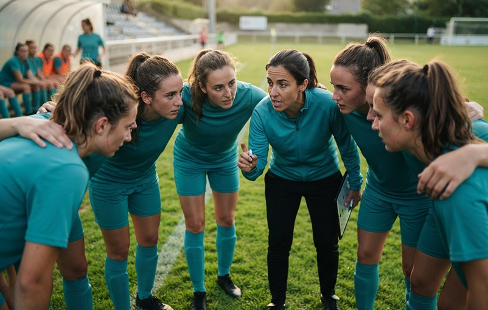

Noticias UDDEA · Comunidad de Madrid
El futuro del fútbol base se construye fuera del marcador.
Personas, metodología y un propósito común: acompañar al jugador en cada etapa.
Redacción UDDEA · 14 oct. 2026 · 5 min de lectura →